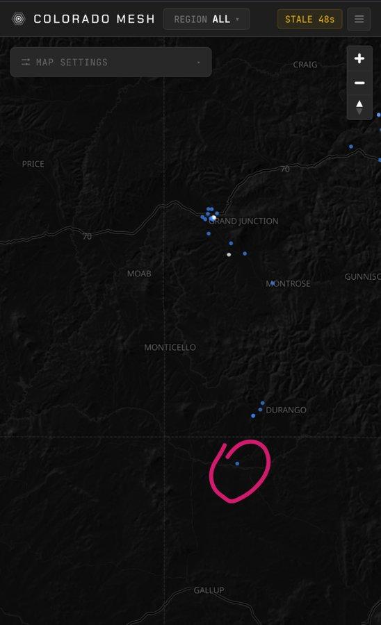
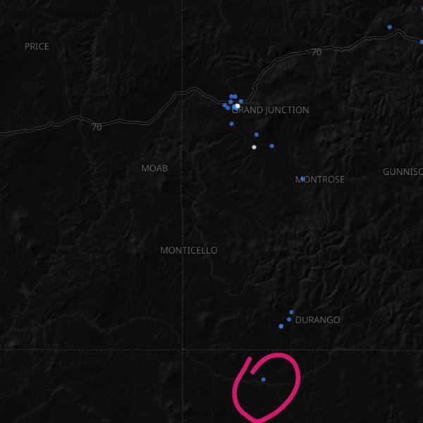
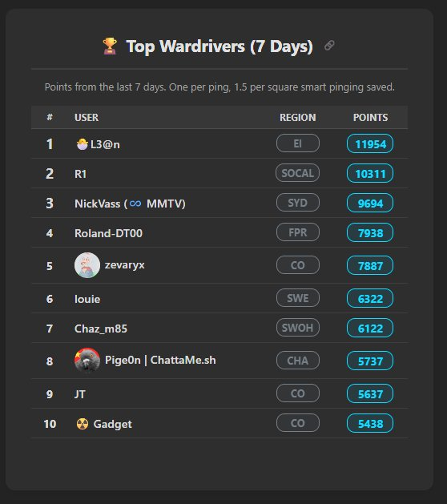
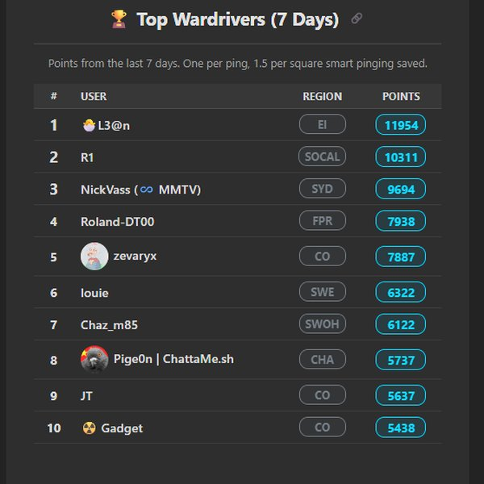
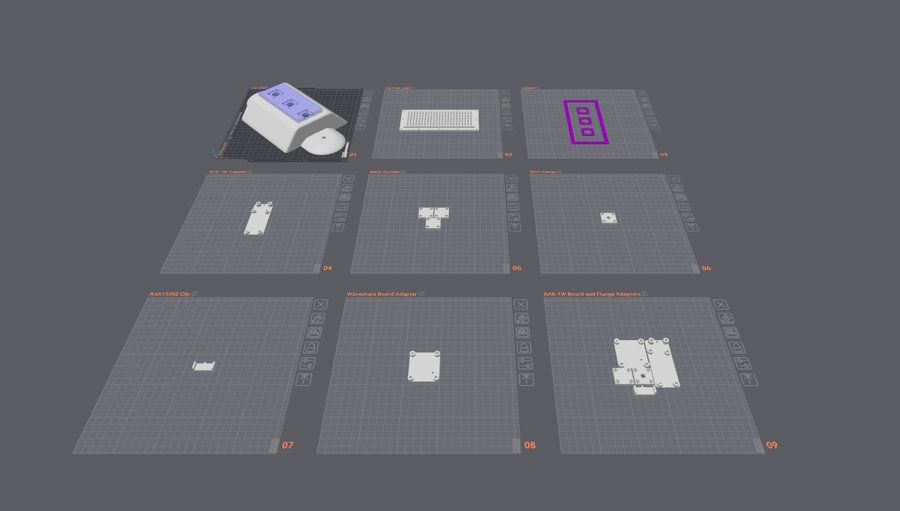
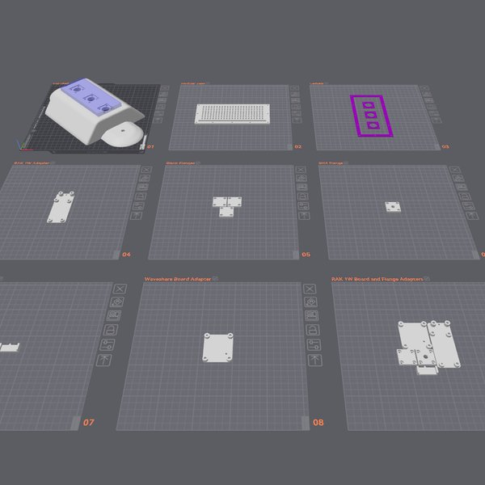
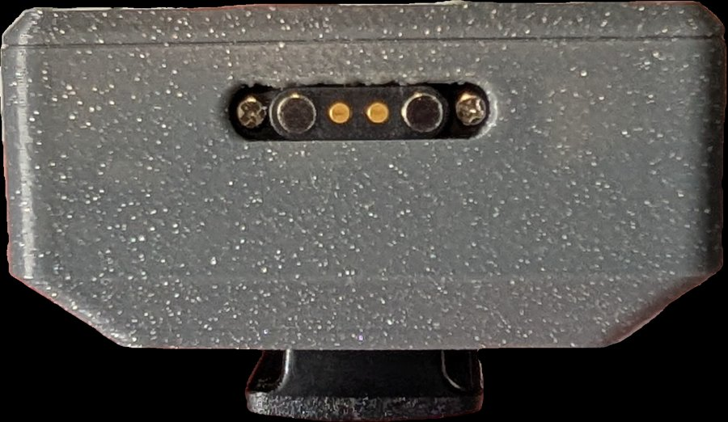
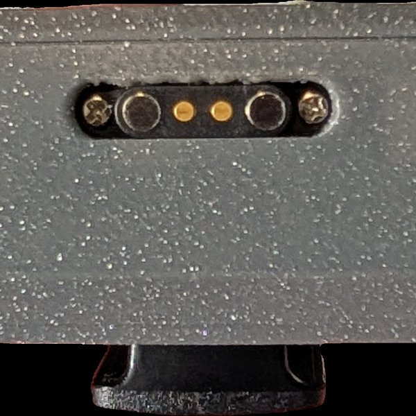

Left = full image · Right = how it looks center-cropped to a 1:1 hero. Pick one and tell me.
Durango↔New Mexico bridge — a map screenshot proving an inter-state link. Ties to the top MeshCore story.


Zeva hits #5 in the WORLD on MeshMapper. Ties to the wardriving highlight. Already near-square.


Zeva's new modular magnetic car node (the wardriving rig). Landscape — would crop to a center square.


jk's modified Wio Tracker L1 case with a pogo connector. Hands-on build energy like last month's filter. Landscape.

